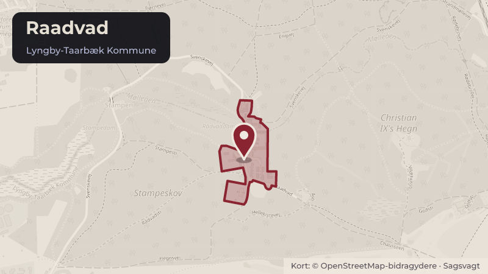

Besluttet 3. november, Teknik- og Miljøudvalget, Lyngby-Taarbæk
Indtægtsbevilling EU-projekt DEPLOY-PED
Klima og grøntBudget og økonomi

Kort fortalt
- Hvem
- Teknik- og Miljøudvalget, Lyngby-Taarbæk Kommune
- Hvornår
- Tirsdag 3. november 2026
- Status
- Besluttet. Teknik- og Miljøudvalget anbefaler. Økonomiudvalget anbefaler. Kommunalbestyrelsen beslutter.
- Næste skridt
- Projektets resultater vil blive anvendt i arbejdet med implementeringen af kommunens DK2020 Klimaplan.
Er noget forkert her? Skriv til os
Læs hele sagen Kommunens egen tekst
Indstilling
Forvaltningen foreslår, at
1. kommunens deltagelse i det 4-årige EU-projekt "DEPLOY-PED" godkendes,
2. indtægts- og udgiftsbevilling indarbejdes på aktivitetsområdet Klima, Miljø og Natur i
budgetopfølgningen, når endelig betalingsplan kendes.
Problemstilling
Lyngby-Taarbæk Kommune har besluttet en DK2020-klimaplan, hvis overordnede mål er, at
Lyngby-Taarbæk bliver CO2-neutral i 2050.
En af de vigtige indsatser i klimaplanen er fremme af lokal energiproduktion - ikke mindst i en
krisetid hvor beredskab og selvforsyning fylder stadig mere.
Samtidig er det relevant at undersøge og udvikle alternative løsninger til områder, hvor
fjernvarme ikke er muligt eller forhindret.
Løsninger
Projektet "DEPLOY-PED" er blevet godkendt af EU's HORIZON Innovative Actions Program
"Deploying innovative positive energy districts" (DEPLOY-PED) projektet understøtter
kommuner og virksomheders arbejde med at skabe robuste, klimaneutrale bysamfund.
DEPLOY-PED giver europæiske og canadiske byer og kommuner mulighed for at blive
energipositive med vedvarende energi og udvikle et regionalt PED-koncept for CO2-neutralitet
med det rette energimix (f.eks. solceller, vind, geotermisk energi, genvinding af
overskudsvarme, biometan).
DEPLOY-PED samler 20 partnere fra Danmark, Island, Østrig, Tjekkiet, Spanien, Tyskland,
Portugal, Kosovo, Ukraine og Canada i et fælles projekt. Projektet er ledet af den islandske
organisation Eimur.
Fra Lyngby-Taarbæk deltager Raadvad som Case by i tæt samarbejde med DTU.
EU-støtten vil i Lyngby-Taarbæks tilfælde primært blive anvendt til at medfinansiere forarbejdet
til en kollektiv varmeløsning i Raadvad.
Ansøgningen er kommet i stand med både økonomisk og faglig hjælp fra Greater Copenhagen
EU Office. Projektets officielle løbetid er fra januar 2027 til december 2030.
Strategisk ramme
DEPLOY-PED bidrager til Kommunens vedtagne DK2020-Klimaplan.
Økonomi
Projektets økonomi indeholder 100% finansiering fra EU's HORIZON program. Det samlede
budget for Lyngby-Taarbæk Kommune er 340.000 € (2.500.000 kr.). Der er primært tale om
lønmidler.
Indtægts- og udgiftsbevilling indarbejdes på aktivitetsområdet Klima, Miljø og Natur i
budgetopfølgningen, når den endelig betalingsplan kendes.
Videre proces
Projektets resultater vil blive anvendt i arbejdet med implementeringen af kommunens DK2020
Klimaplan.
Beslutning
Teknik- og Miljøudvalget anbefaler.
Økonomiudvalget anbefaler.
Kommunalbestyrelsen beslutter.
Kilde: Lyngby-Taarbæk Kommune, Teknik- og Miljøudvalget, referat fra mødet tirsdag 3. november 2026, punkt 9. Læs den originale sag hos kommunen.
Steder i sagen: Raadvad